Arthur Kowara
This section was done using 2 or 4 for loops and a combination of array manipulations. It was helpful to show the power of convolutions as well as gaining a better understanding of how they work. In all examples, the scipy convolution was the quickest. Comparing the four loop to two loop convolutions, for the 9x9 box the two loop convolution was much quicker, but for Dx and Dy the four loop convolution was the quicker option. This is due to Dx and Dy having fewer inner iterations at the kernel level.
| Kernel | Four loops | Two loops | scipy |
|---|---|---|---|
| 9x9 box | 7.44 s | 1.25 s | 0.0801 s |
| Dx | 0.47 s | 1.15 s | 0.0078 s |
| Dy | 0.47 s | 1.08 s | 0.0074 s |
Maximum difference from scipy for the 9x9 box: 1.33e-15 (four loops) and 6.66e-16 (two loops). For Dx the difference was 0 for both.
For the boundaries, the image is zero padded by (k − 1)/2 pixels on each side before convolving so the output
is the same size as the input. This is the same as scipy's convolve2d with mode="same",
boundary="fill" and fillvalue=0, which is why the differences are basically zero. Because of
the zero padding the edges of the output get darker for the box filter since part of the kernel is averaging zeros.
The kernel is also flipped before sliding it over the image so it is a true convolution and not a correlation.
def zero_pad(img, kH, kW):
pad_top = (kH - 1) // 2
pad_bottom = kH - 1 - pad_top
pad_left = (kW - 1) // 2
pad_right = kW - 1 - pad_left
H, W = img.shape
padded = np.zeros((H + pad_top + pad_bottom, W + pad_left + pad_right))
padded[pad_top:pad_top + H, pad_left:pad_left + W] = img
return padded
def conv_four_loops(img, kernel):
kernel = np.flip(kernel)
kH, kW = kernel.shape
H, W = img.shape
padded = zero_pad(img, kH, kW)
output = np.zeros((H, W))
for i in range(H):
for j in range(W):
total = 0.0
for m in range(kH):
for n in range(kW):
total += padded[i + m, j + n] * kernel[m, n]
output[i, j] = total
return output
def conv_two_loops(img, kernel):
kernel = np.flip(kernel)
kH, kW = kernel.shape
H, W = img.shape
padded = zero_pad(img, kH, kW)
output = np.zeros((H, W))
for i in range(H):
for j in range(W):
output[i, j] = np.sum(padded[i:i + kH, j:j + kW] * kernel)
return output
box = np.ones((9, 9)) / 81.0
Dx = np.array([[1, 0, -1]])
Dy = np.array([[1], [0], [-1]])It seems that the best qualitative threshold is between 0.075 and 0.1 depending on the trade off chosen. Personally, I prefer having sharper edges with some added noise so I would pick 0.075 as the desired threshold. With the 0.075 threshold, the edges of the buildings in the back are sharper and show more details than 0.1. When it comes to a threshold of 0.05 there is too much noise shown to confidently say it is the best threshold.
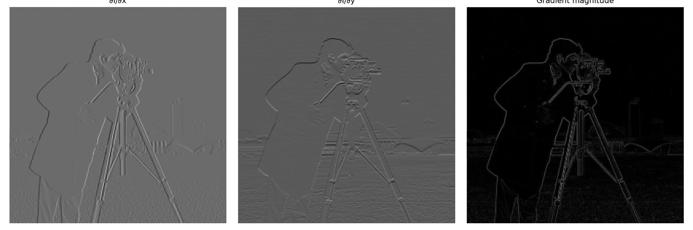
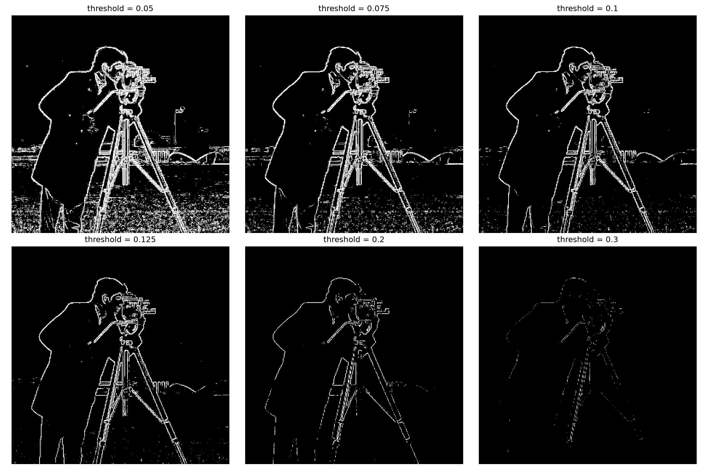
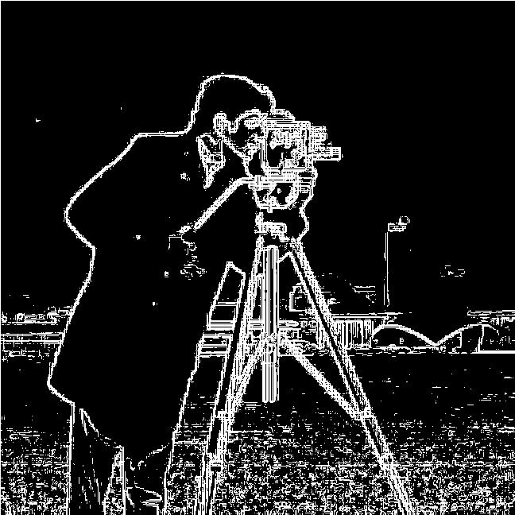
The previous method used in 1.2 has a heavy trade off between noise and edges which requires design choices to be made in order to form the cleanest image to answer the question. The two methods used in this section create sharper gradients (Dx and Dy), which lead to a cleaner edge image in the end. Comparing the DoG and Blur methods, the DoG method outperforms, creating sharper gradients which lead to a sharper edge map. The Blur method leads to less noise than part 1.2, but forms duller gradients forming a worse edge map. This makes sense because the change between pixels on a blurry image is not as intense as it would be for a sharper image.
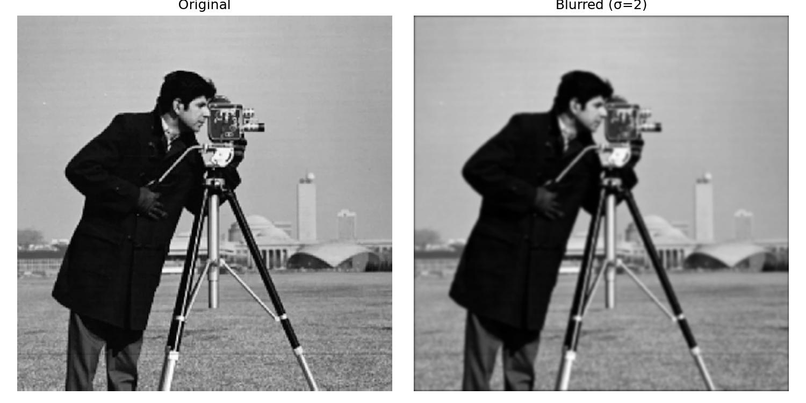
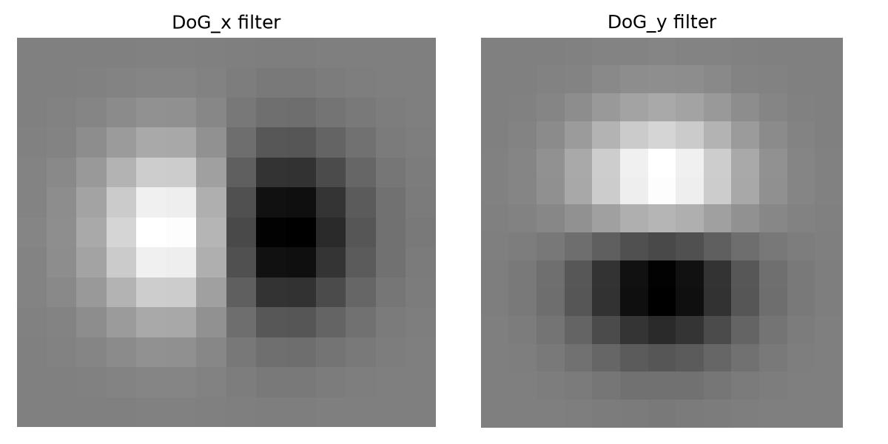
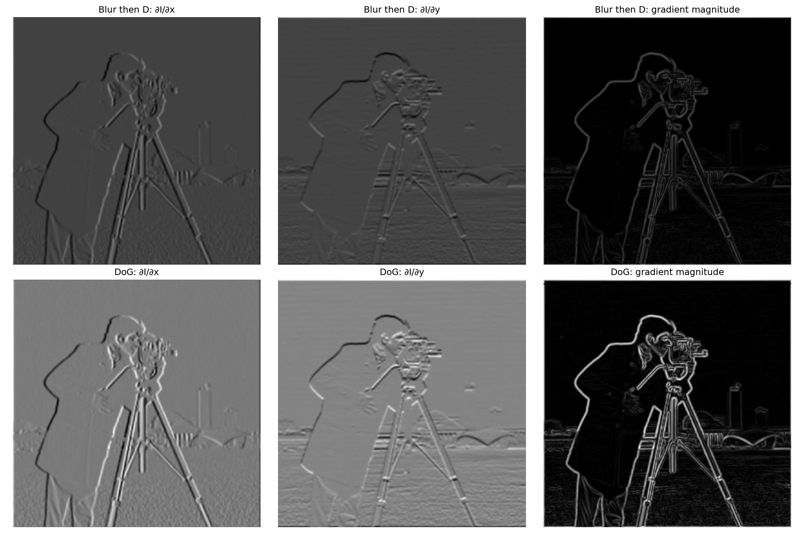
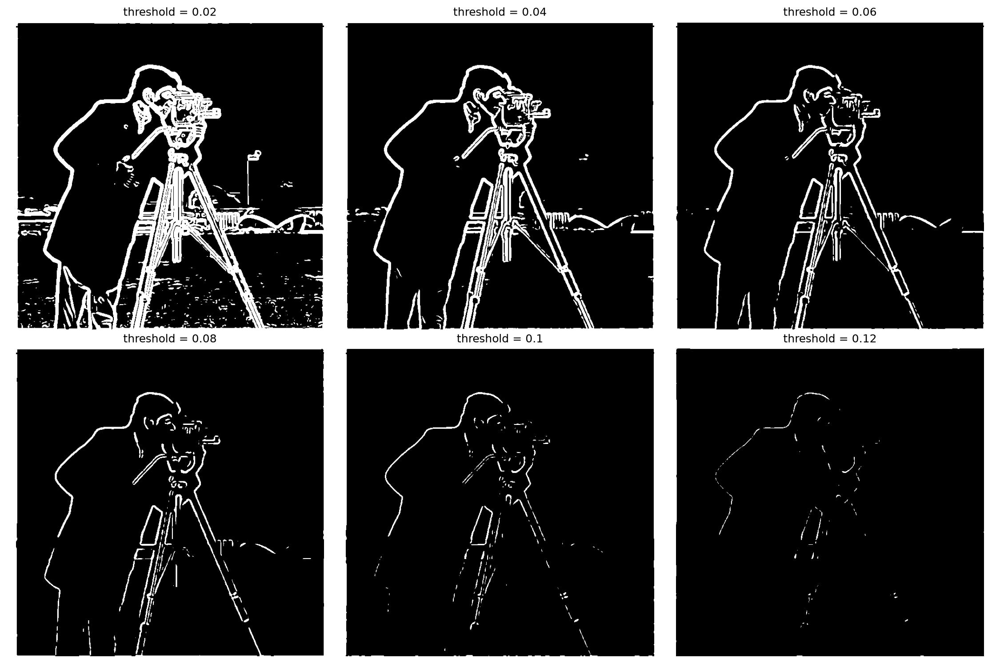
To verify that the DoG filter gives the same result as blurring then taking the derivative, I took the absolute difference between the two gradient magnitude images. Away from the borders the max difference is 1.21e-15, which is just floating point error, so the two methods are the same. The only difference is at the border (max 0.311) because the zero padding happens at a different step in each method, blurring first pads the image once and then the derivative pads the blurred image again, while the DoG only pads once.
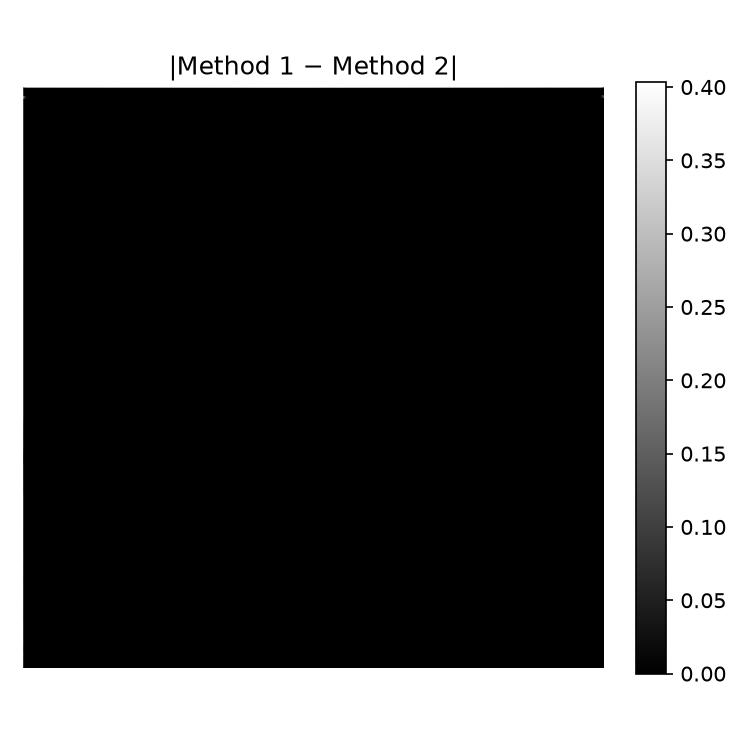
Using the DoG results, each pixel has a gradient of Ix and Iy. Given the partial derivatives at each pixel, it is possible to get the orientation of the gradient vector using arctan2. To calculate this, I created a function which takes in the y and x derivatives and does the following:
To check the function I compared it to np.arctan2 only as a test (it is not used for the results) and
the max difference was 7.59e-14. The orientation is then mapped to hue in HSV. The first image only uses hue, which
is noisy in flat areas since tiny gradients still have a direction. The second image uses the gradient magnitude as
the value so only the real edges show up, and the colour shows which direction each edge is facing.
The unsharp mask is formed by building a 2D Gaussian kernel and convolving it with the image. This kernel averages out pixels with their neighbouring pixels, which softens the edges and acts as a blur filter. Since the Gaussian kernel creates a low frequency blurred image, it can be subtracted from the original image and the difference between the two is the sharp edges. Having an image of only sharp edges, it can be multiplied by a factor greater than 1 (alpha in the example) to accentuate edges, then added to the original image to create a sharpened version with stronger edges.
The images below show that as alpha increased the edges became stronger and more noticeable, which is consistent with an image being sharpened. The images also show the unsharp mask and the transformations performed step by step. First there is the normal image, then a Gaussian kernel is applied to blur the image. After blurring, the blurred image is subtracted from the original, showing off its edges. Finally the edges are multiplied by an alpha of 1.5 and added to the original image, creating a sharpened image with clear edges.
All of these steps can also be combined into a single convolution, which is the unsharp mask filter. Since sharpened = f + α(f − f * G), it can be rewritten as f * ((1 + α)e − αG) where e is the unit impulse. The results shown are from this single filter, and the max difference from the step by step version is about 2e-15 so they are the same.
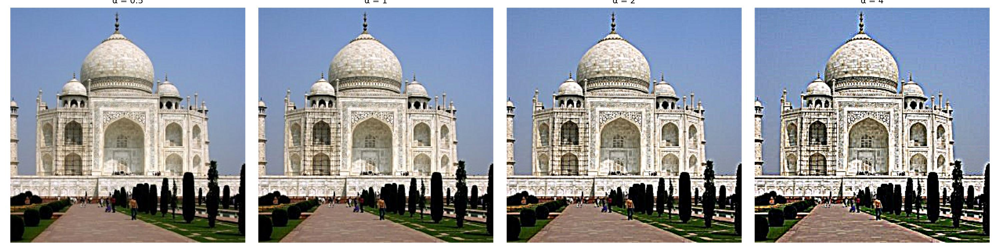
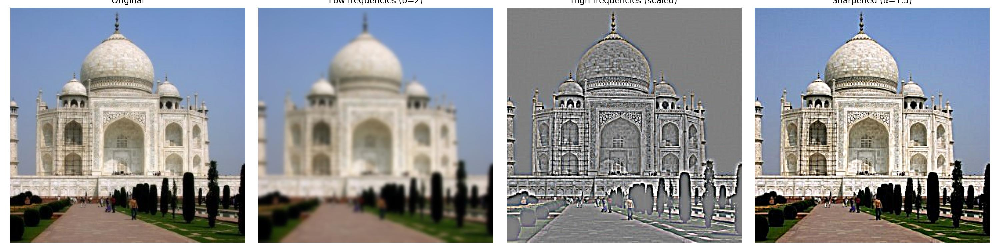
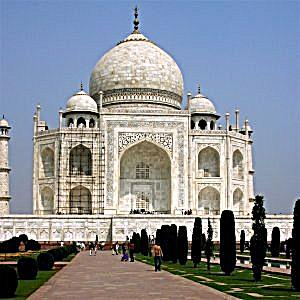
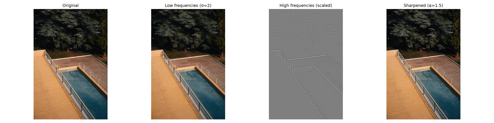
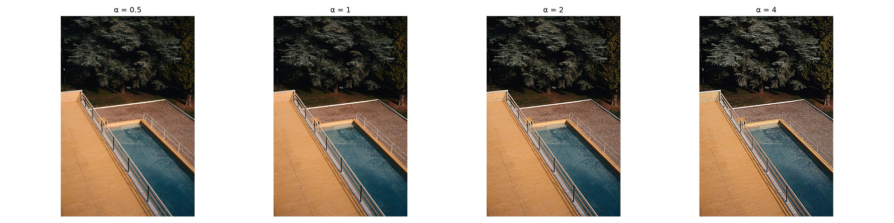
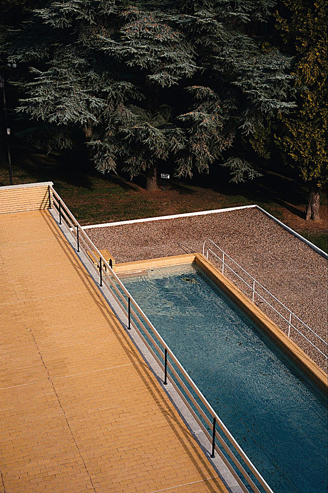
For the evaluation I took a sharp image of a skyline, blurred it with a Gaussian (σ = 2), and then tried to sharpen it again using the unsharp mask with different alphas. The PSNR compared to the original is shown above each image. Sharpening helps a bit, going from 29.6 dB for the blurred image to 30.7 dB at α = 2, but it never gets close to the original. Looking at the zoomed crop, the edges of the buildings look sharper but the fine details like the windows and the noise in the sky do not come back. This makes sense because the blur removed those high frequencies, and the unsharp mask can only boost the high frequencies that are still left in the image, it can not create new ones. At α = 4 the PSNR goes back down and there are bright halos around the buildings, which shows that sharpening too much starts to add artifacts instead of detail.
The images below show my results from Part 2.2 using the suggested paper. I created three hybrid images: Nutmeg and Derek, a happy and a straight face, and a bear and a man. For each image pair I adjusted different weights for the averaging to create as balanced an image as possible in terms of high and low frequencies. To show off the intermediate results I chose the hybrid image of a happy and a straight face. For this example the low frequency input is a woman who has a straight face, while the high frequency input is a man smiling. The two images were aligned based on the location of their eyes, and any rotation needed was done using my arctan2 function from Part 1. The man's face dominates when up close but fades away as the image zooms out, which is as expected. When combining the images, different cutoff frequencies were experimented with, and the best solutions seem to be specific to the image pairs. The result images for each pair show which cutoffs were chosen.
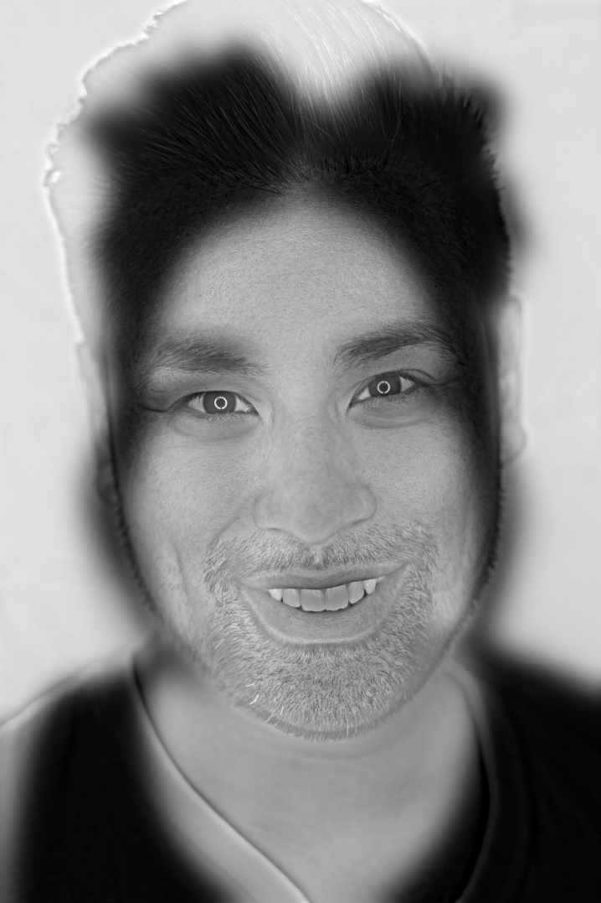
To align the images, two points are clicked on each image (the centre of each eye). Each image is first translated so the midpoint between the eyes is at the centre, then the image with the larger distance between the eyes is scaled down so the distance between the eyes is the same in both. The angle of the line between the eyes is found using my arctan2 function from Part 1 and the high frequency image is rotated by the difference in angle. Finally both images are cropped to the largest rectangle where they overlap so there are no black borders. The overlay on the right shows that the eyes line up in both images after alignment.
Looking at the frequency analysis, both original images have similar frequencies, carrying most of their energy at low frequencies. The low-passed image only has a small region around the center, and the border lines are preserved, which means the Gaussian has strongly suppressed the high frequencies as desired. The high-pass filter is the opposite, as expected: the border lines are much weaker and the center is not as concentrated, meaning that the energy is spread over the high frequencies. After merging, the frequencies are similar to the original images, signifying that the merger preserved the high and low frequencies, as the frequency image of the hybrid resembles the frequency images of the originals.
The images of the Laplacians and Gaussians at different levels are very interesting since they show which frequencies are available at each layer. This was helpful for debugging and figuring out how well the chosen cutoffs work with each image pair.
Below are the original images used and their final hybrid images after merging. Above each image are the high and low frequency cutoffs used.
The most interesting part of playing around with the colours is finding out that colour is a low frequency feature, so the high-pass filter removes most of the colour, essentially making that image grayscale. That finding means there are really only two options that look different: the hybrid stays mostly grayscale (grayscale or colour only on the high frequency image, which look almost the same), or the low frequency image has colour. When the low frequency image has colour, the hybrid image looks more natural from a shorter distance away, but makes it more difficult to see the high frequency image up close since the colour belongs to the low frequency face. For this reason I believe it is better to keep the hybrid mostly grayscale by only using colour on the high frequency image, making the effect more balanced between frequencies instead of dominating on one frequency.
Each image below shows the different options for colour as well as what the image would look like from further away.
The Gaussian stack is made by blurring the image with a Gaussian at each level without downsampling, with the sigma doubling every level. Each Laplacian level is the difference between two Gaussian levels, and the last Laplacian level is the last Gaussian level so that adding up the whole Laplacian stack gives back the original image. The stacks for the apple and orange are shown below.
The next image shows the Gaussian and Laplacian stacks for the orange and apple and recreates the outcomes of Figure 3.42. The second image is a bigger version of the final result of the combination and looks to be in line with the textbook.
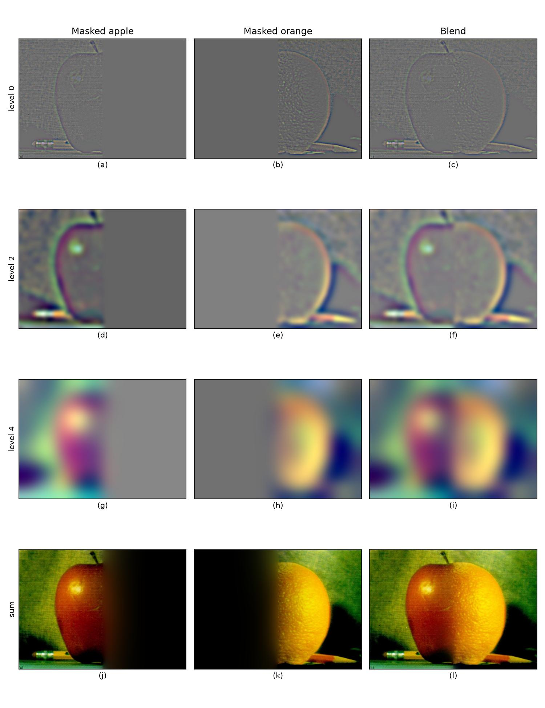
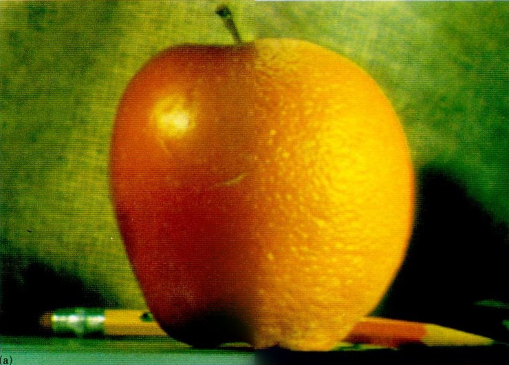
The first combination is a dog and a lion merged with a vertical line down the middle, similar to the oraple. Both sets of eyes line up well, which makes the effect look good, and there is a minimal seam between the two images. The mask used is shown between the original images and the merged image.
This combination is of the Rocky Mountains and the moon, to make the image look like the moon is rising. The mask was made by tracing out the foreground of the mountains, then combining the moon image over the background of the mountain image.
The images below show the masked Laplacian stack levels for each image, which is the section of each image that was used in the reconstruction.
This combination is supposed to show an astronaut floating in the night sky above a mountain, as if seen from Earth. This one followed all the steps but was not as cool of an effect due to the background of the astronaut. As a next step, a mask could be created to crop out the astronaut and then add them to the image of the mountain.
This final combination shows a moon replacing a dog's eye. This is done by creating an image where the moon is the size of the dog's eye and is at the same spot in the image as the dog's eye. Creating a mask which crops out the dog's eye, and the opposite for the moon image, causes this effect.
Below are the grayscale versions of the images. For this task colour definitely enhances the effect. During these combinations all frequencies are preserved, which allows the colour to be present in the combinations without deteriorating. The colour in the images allows the human eye to process the image better and understand the effect going on. For example, in grayscale the moon in the dog's eye does not seem as crazy as it did in full colour.
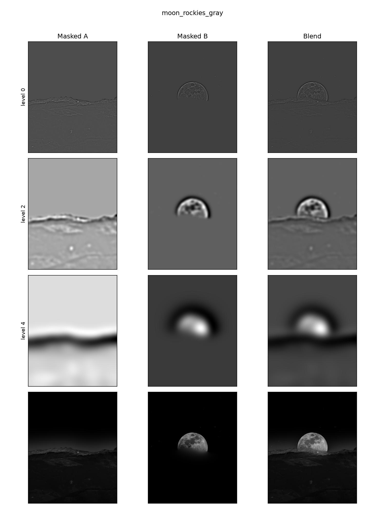
Overall, this assignment was very educational on image processing and its overlap with signal processing. After finishing the assignment I see the connection between the two as the core principles of image processing came down to processing the images as frequencies. At the start sharpening, creating hybrid images and blending looked like separate tasks, but after further investigation they all involved separating the low and high frequencies and putting them back together in different ways. The images showing the intermediate steps of different tasks were very helpful in understanding what is happening behind the scenes of image processing. It was one thing to understand how to code this assignment but then seeing those images made it much easier to understand what was actually happening on the frequency side of things.